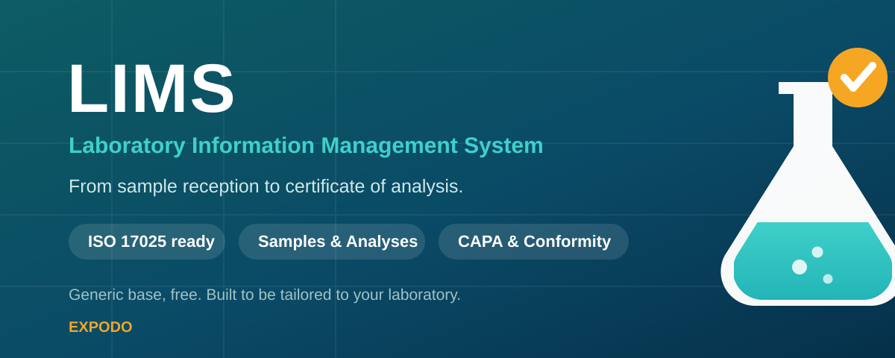
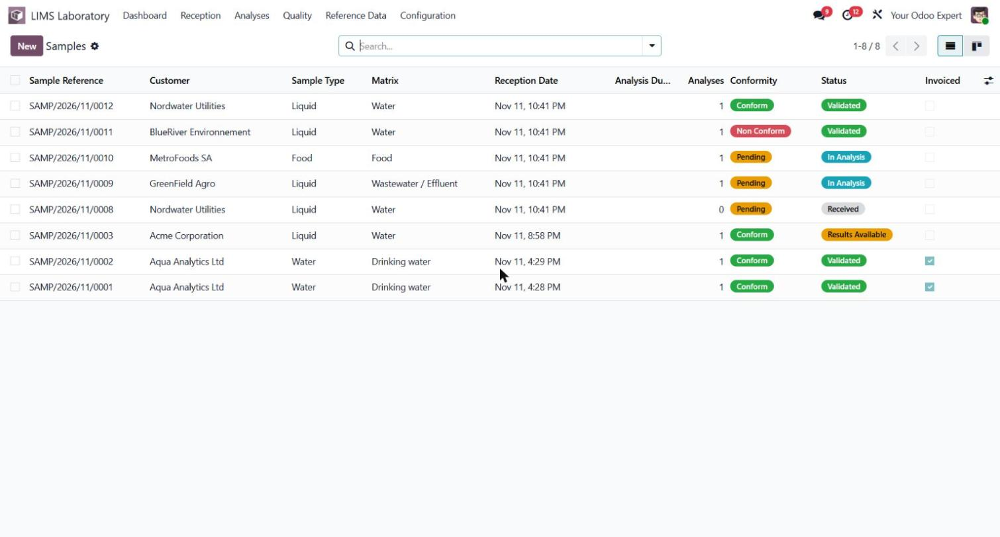
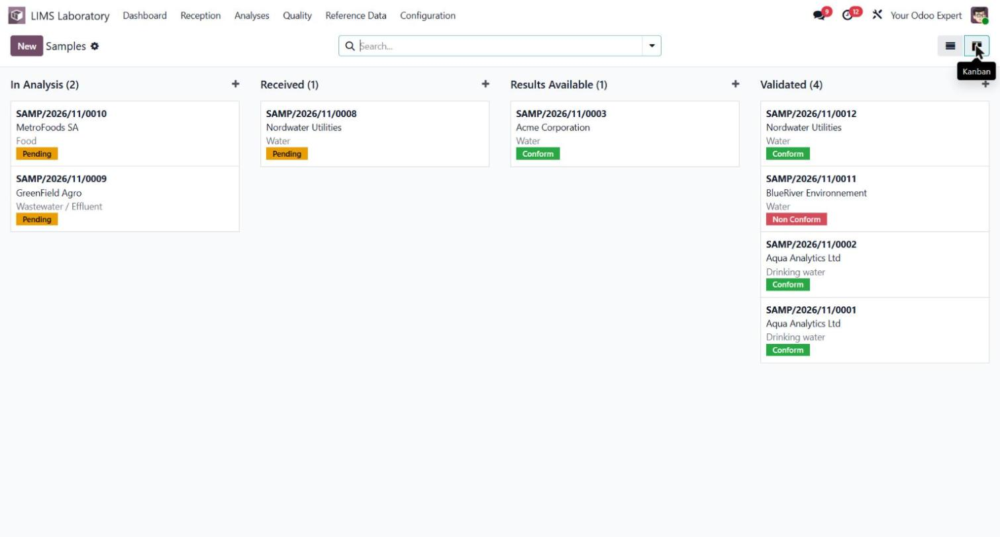
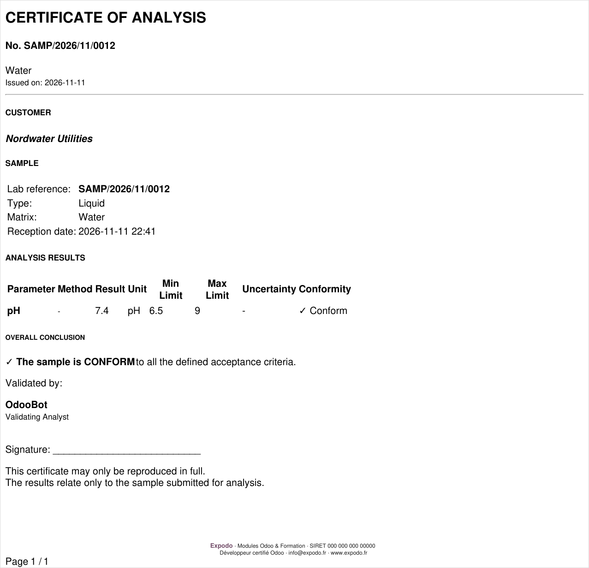

Manage the full life of a sample: reception, chain of custody, analyses, measurements, conformity against your own limits, certificate of analysis and invoicing. Built around ISO/IEC 17025 practices and ready to run on Odoo Community.
Reception with barcode, sample types and matrices, deadlines, storage and a full chain-of-custody log for traceability.
Parameters, analytical methods and equipment. Record replicate measurements; the final value is averaged automatically and stays editable.
Define min/max limits, LOD and LOQ per parameter. Each result is automatically flagged Conform, Non Conform or Below LOD.
Measurement uncertainty and confidence level, equipment calibration and verification tracking, accredited methods and parameters.
Generate a clean PDF certificate with results, limits, uncertainty and an overall conformity conclusion, ready to send to your customer.
Open non-conformities, record root cause, corrective and preventive actions, verify effectiveness and close with a full audit trail.
Customer, matrix, conformity and workflow status in one list, with urgent and overdue samples highlighted.

A kanban board organised by stage, from reception to validation, so nothing is left behind.

Every validated sample produces a certificate of analysis with the full results table and conformity conclusion.

Every laboratory works differently: its own parameters, limits, methods, report layout and regulatory context. This module gives you a solid generic foundation for free, designed from the start to be tailored.
Need your parameters pre-loaded, a certificate in your branding, a specific accreditation workflow or an integration with your instruments? That is exactly what we do.
Odoo migrations and custom development · www.expodo.fr · info@expodo.fr